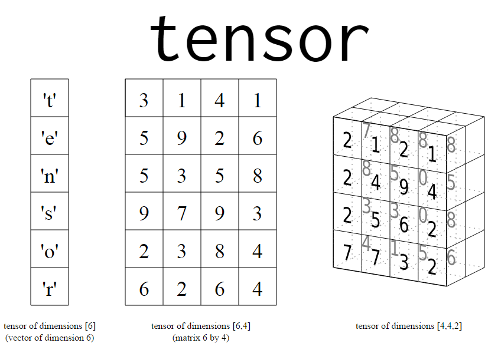

Tensorflow from what my opinion is one of the best thing that can happen to whole Artificial Intelligence community. As a Second Year student from what i can understand about Tensorflow is that it is kind of Implicit Data Structure Library.We all know there is STL lib in C++ and you can access various data structures just by including the header files.Some of you must be thinking what is this Implicit Data Structure. Well as per my statement Data Structures which normally programmers use such as Stacks,Dequeues,HashMaps etc is used in Explicit Programming.

Deep Learning and Machine Learning focuses on Implicit Programming. In this the data is represented in form of Vectors.As you can see the first image is basically 1-D Vector . Operation for such 1-D vectors cannot be done simulatenously it has to be done step wise step .For e.g Multiplication of two 1-D Vectors(step-wise). Second Image is basically 2-D Vectors (Matrices) . Operations such Multiplication of Vectors can be done simultaneously in this type of vectors . For e.g Neural Networks has to do operations such as multiplication at same level simultaneously. Third Image is Tensors In this type you can give an extra dimension for data to flow through network.Thus data can passed between two different simultaneously.
Application : MNIST data set recognition
Whenever you learn something new in programming you start with something called as "Hello World !". Well in Machine Learning the MNIST dataset is consider as the Hello World.I have used Tensorflow with Logistic Regression to develop a Support Vector Machine Algorithm in order to predict the dataset.
Problem Statement:
MNIST dataset contains images of numbers from 0 to 9 in various fonts and our task is to develop the an algorithm which predicts the test data with maximum accuracy.
Approach
Support Vector Machine : Its is used to construct a hyperplane in order to classify data
SoftMax Function : The activation function used in this case is a softmax function.
Gradient Descent : This algorithm is beginners algorithm to minimize the cost function.
Tensorflow Session : This part of code takes the above three parts and simultaneously manipulates to an output 1-D vector of rows 10 for each of its number.
Conclusion :
Support Vector Machine helps to get an accuracy of 92% which is not bad and you can further improve by intialising the zero tensors around the Standard Deviation of the data.
Thank you for Reading ! Hope you like it.
Peace Out !!!
Github Link to project